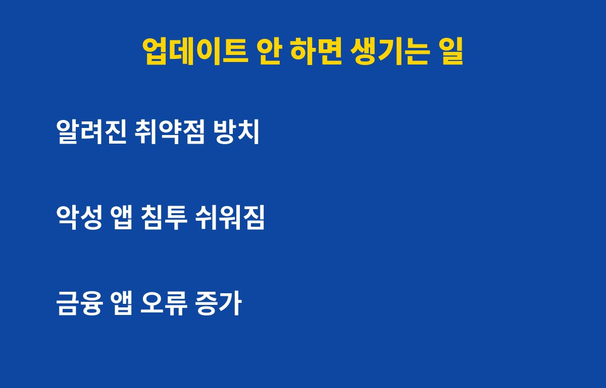
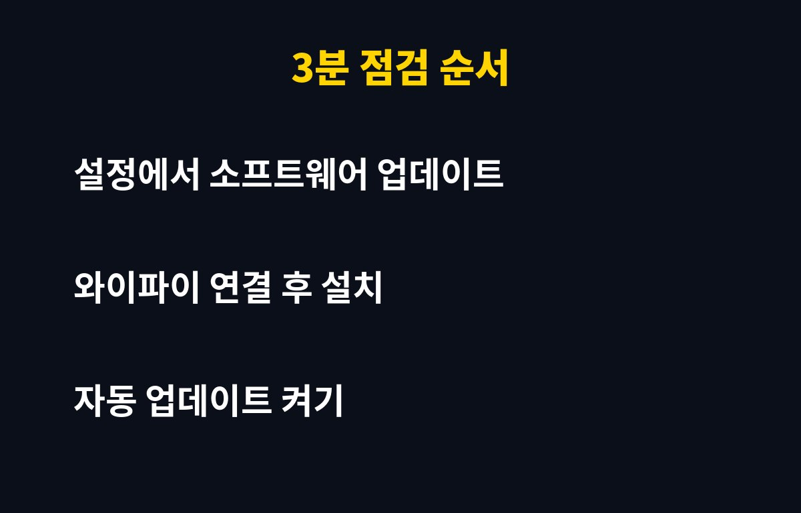

보안 업데이트 알림, 지금까지 몇 번이나 "나중에"를 누르셨나요? 스마트폰을 쓴다면 이 알림을 계속 미루는 순간부터 내 폰이 어떻게 되는지 궁금하실 텐데, 결론부터 말하면 생각보다 위험해요.
업데이트는 새 기능을 넣는 것만이 아니에요. 제조사와 구글, 애플은 해커가 노리는 구멍, 즉 취약점을 발견하면 그걸 막는 패치를 만들어서 배포해요. 그런데 이 패치 내용은 공개되는 경우가 많아요.
패치가 공개됐다는 건, 반대로 "이 폰은 이런 구멍이 있었다"는 힌트가 퍼진다는 뜻이기도 해요. 그래서 업데이트를 안 한 폰은 이미 알려진 구멍을 그대로 열어둔 셈이 돼요.
가장 흔한 건 악성 앱이나 문자 속 링크를 통해 폰에 몰래 들어오는 경우예요. 최신 상태라면 막혔을 공격이 업데이트를 미룬 폰에서는 통하기 쉬워져요.

또 하나는 호환성 문제예요. 은행·증권·간편결제 앱은 보안 기준을 계속 올리기 때문에, 오래된 운영체제에서는 앱이 갑자기 실행되지 않거나 오류가 나기도 해요. 중요한 순간에 송금이 안 되면 곤란하겠죠.
| 상황 | 업데이트 함 | 계속 미룸 |
| 알려진 취약점 | 패치로 차단 | 그대로 노출 |
| 금융·결제 앱 | 정상 사용 | 오류·실행 제한 가능 |
| 악성 링크 대응 | 방어력 유지 | 뚫릴 가능성 증가 |
| 배터리·속도 | 개선되는 경우 많음 | 그대로 또는 불안정 |
방법은 간단해요. 갤럭시는 설정에서 소프트웨어 업데이트, 아이폰은 설정의 일반에서 소프트웨어 업데이트로 들어가면 돼요. 새 버전이 있으면 와이파이에 연결하고 배터리를 충분히 채운 상태에서 설치하세요.

설치 전에 중요한 사진이나 연락처는 백업해 두면 더 마음이 편해요. 그리고 마지막으로 자동 업데이트를 켜두면, 다음부터는 "나중에"를 누를 일 자체가 없어져요.
"업데이트하고 폰이 느려졌다더라" 하는 얘기 때문에 망설이는 분들도 많아요. 하지만 보안 패치는 대부분 용량도 작고 체감 변화도 거의 없어요. 큰 버전 업그레이드가 걱정된다면, 보안 패치만 먼저 설치하고 큰 업그레이드는 며칠 후기를 보고 결정해도 괜찮아요.
오늘 알림이 떠 있다면 지금 3분만 투자해서 눌러보세요. 이런 생활 속 IT 꿀팁이 도움이 됐다면 구독해 두시면 다음 소식도 놓치지 않아요.
기사·공식 발표 기준이며 출시·가격 정보는 바뀔 수 있어요.